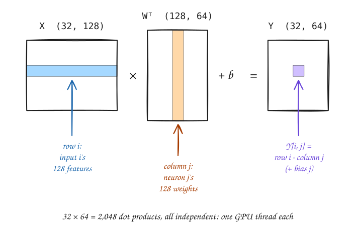
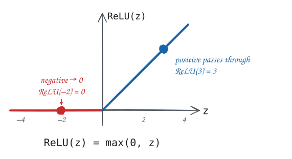
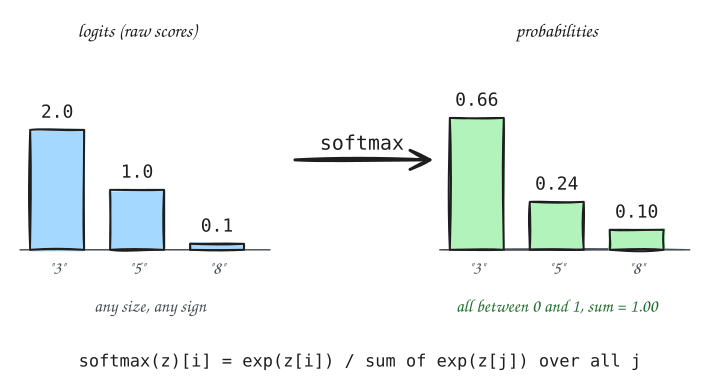
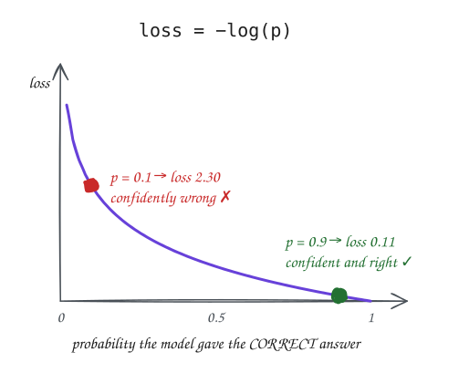
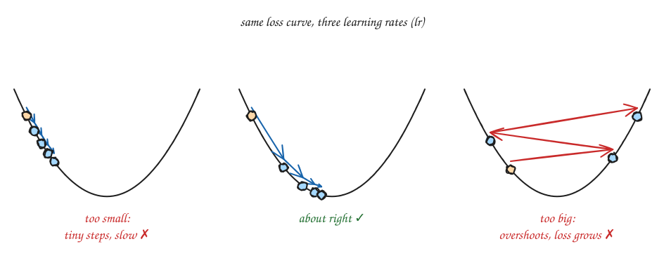
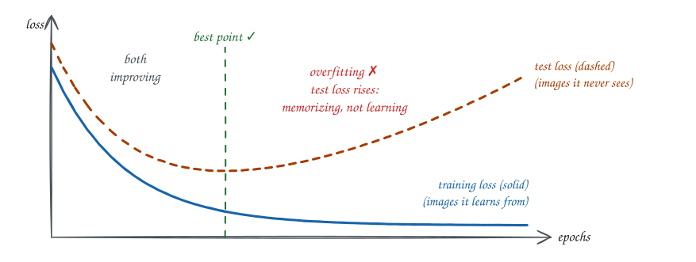

Module 6: GPU Libraries & Applications
CuPy, PyTorch, and the Wider Ecosystem — COSC 435
Session 1 · Nov 16 · CuPy
Today’s Plan
- Quiz 6 first (CodeCheck, open slides): stride-halving reduction and a stencil boundary policy from Module 5
- Then: why you’d reach for a library instead of writing a kernel by hand
- CuPy’s pitch: NumPy syntax, GPU execution
- Three CuPy operations you’ll use directly in the capstone
The Problem with Writing Every Kernel by Hand
- Every kernel in Modules 2–5 was hand-written: you chose the launch configuration, wrote the indexing, managed shared memory yourself
- That’s the right skill to have. But for standard operations (sum, mean, sort, matrix multiply) you’d be re-deriving code GPU vendors have spent years tuning
NVIDIA ships a library for each of these:
- cuBLAS: dense linear algebra (matrix multiply, among others)
- cuDNN: deep-learning building blocks (convolutions, activations)
- cuFFT: Fourier transforms · cuRAND: random numbers · cuSPARSE: sparse matrices
CuPy is a Python array library that wraps this ecosystem behind a NumPy-shaped API: you get the tuned code without calling any of these libraries yourself.
![A layered diagram. At the top, an orange box 'your Python code' has two arrows down. The left arrow goes to a wide blue box 'CuPy: a NumPy-shaped API' listing the calls cp.mean(x), A @ B, cp.argpartition(...), rng.standard_normal(...). The right arrow goes to a purple box 'Numba, @cuda.jit'. Below CuPy, five boxes each get an arrow from CuPy: 'cuBLAS: matrix multiply', 'cuRAND: random numbers', 'cuFFT: Fourier', 'cuSPARSE: sparse', and a gray box 'CuPy's own kernels'. Below Numba, a yellow box 'your kernel (Modules 2–5)'. Every one of these boxes has an arrow down to a single wide gray box at the bottom, 'CUDA → the GPU'. Caption under the CuPy side: 'CuPy: NVIDIA (or CuPy) already wrote and tuned the kernel'. Caption under the Numba side: 'Numba: you write it'.](diags/cupy-library-stack.svg)
Both paths end up as kernels on the same GPU. The difference is who wrote the kernel.
CuPy: The Pitch
- Most NumPy code ports by changing
np.tocp.: the array now lives in GPU memory, but the Python API is (almost) unchanged cp.sqrtlaunches a real GPU kernel: nothing is simulated, it genuinely runs on the GPU
The Three-Step Cycle
import numpy as np
import cupy as cp
# 1. Move data to GPU
data_cpu = np.random.randn(5000, 200).astype(np.float32)
data_gpu = cp.asarray(data_cpu)
# 2. Compute on GPU: no kernel required
mean_gpu = cp.mean(data_gpu, axis=0) # column means, shape (200,)
std_gpu = cp.std(data_gpu, axis=0) # column stds, shape (200,)
z_gpu = (data_gpu - mean_gpu) / (std_gpu + 1e-8)
# 3. Bring the result back
z_cpu = cp.asnumpy(z_gpu)- Same host↔︎device transfer discipline as Module 2’s
cuda.to_device()/copy_to_host(), spelledcp.asarray()/cp.asnumpy() - Three lines do a column reduction, broadcasting, and element-wise math, all on the GPU
- This exact pattern is Lab 12 Exercise 1 (the column-wise z-score)
axis and keepdims: Which Way You Reduce
axis names the dimension that disappears. Broadcasting then lines shapes up from the right.
![Three panels side by side, each starting with x of shape (5000, 200). Panel 1, 'm = x.mean(axis=0)': the shapes are written right-aligned, x: (5000, 200) above m: (200,), with the note 'compare from the right'. A green bar labeled (200,) sits on top of a gray matrix labeled x (5000, 200), with small arrows down into it and a dashed arrow running down the side. Caption: '✓ one mean per column, copied down every row'. Panel 2, 'm = x.mean(axis=1)': x: (5000, 200) above m: (5000,) in red, and a red box '200 ≠ 5000'. Caption: '✗ ValueError: operands could not be broadcast together'. Panel 3, 'm = x.mean(axis=1, keepdims=True)': x: (5000, 200) above m: (5000, 1). A tall thin green column labeled (5000, 1) sits to the left of the gray matrix, with a dashed arrow running across the top. Caption: '✓ one mean per row, copied across every column'.](diags/axis-keepdims.svg)
- Column statistics (
axis=0) broadcast for free: the trailing 200s match - Row statistics need
keepdims=True: without it, CuPy compares 200 with 5000 and raises a broadcast error
What Happens Under the Hood
cp.asarray(): a host→device copy, same ascuda.to_device()cp.mean(),cp.std(): CuPy’s own reduction kernels, the same idea as Module 5’s tree reduction, but already tuneddata_gpu - mean_gpu,/ ...: element-wise kernels CuPy writes for you: no@cuda.jit, no launch configuration, no bounds guardA @ B(next slide) is different: it calls cuBLAScp.asnumpy(): a device→host copy. It waits for the GPU to finish first
Each kernel is compiled the first time you use it, then cached. And launches are still asynchronous (Module 3). So to time CuPy:
Key Operation: Matrix Multiply
@on two float32 CuPy arrays calls cuBLAS’s SGEMM routine (S = single precision)- cuBLAS does tiling (your Lab 9 idea), plus prefetching, vectorized loads and per-GPU tuning, far beyond what a course can cover
- Lab 12 Exercise 2 times this against your own Lab 9 tiled kernel: you’ll get a real number, not “cuBLAS is faster” on faith
- Whichever way it lands, explain why: your tiled kernel uses the same core idea as cuBLAS, which has had years more tuning on top
Key Operation: Top-K with argpartition
argpartition(a, K)guarantees only that the K smallest values end up in the first K positions: their order among themselves is not guaranteed- Negating the scores turns “K smallest” into “K largest”
Why not just sort?
- In NumPy,
argpartitionruns in expected O(N) per row, versus O(N log N) for a full sort: a real win when K ≪ N - CuPy is different: its docs say
cp.argpartitioncurrently fully sorts the array, likecp.argsort. On the GPU you get the right answer, not the asymptotic saving - We still use it: it states the intent (“top-K, order doesn’t matter”), the code ports to NumPy, and the sort runs on the GPU, next to the data
This is the capstone’s second step: after computing the 1,000 × 100,000 similarity matrix, find the K = 10 most similar items per query (CK-14 Part B).
Key Operation: Random Numbers on the GPU
- CuPy’s generator runs on the GPU (via cuRAND): no need to make data on the CPU and transfer it over
keepdims=Trueagain: a per-row norm, divided across every column
- The capstone’s setup cells do the same thing with NumPy’s
default_rngon the CPU - Why? CuPy’s generator gives different numbers for the same seed, and the capstone needs identical data for the CPU reference and the GPU pipeline
CuPy vs. Numba: When to Use Each
| Task | Use |
|---|---|
| Standard operation (sum, mean, sort, matmul) | CuPy |
| Quick port of existing NumPy code | CuPy |
| Custom operation with no library equivalent | Numba @cuda.jit |
| A variant no library offers (e.g. a custom combiner, a fused stencil) | Numba |
| Full control over memory layout and synchronization | Numba |
| Capstone: similarity, then top-K | Numba kernel for similarity (naive in CK-13, tiled in CK-14), CuPy argpartition for top-K |
- This table is Lab 12 Exercise 4’s question in table form: there’s rarely one “correct” tool, only a better fit
- The capstone uses both: a hand-written Numba kernel where tiling is the point of the exercise, and CuPy for top-K, a standard operation with no reason to reinvent it
Interoperability: CuPy and Numba Together
import cupy as cp
from numba import cuda
@cuda.jit
def add_one(x):
i = cuda.grid(1)
if i < x.shape[0]:
x[i] += 1.0
x_cp = cp.zeros(1000, dtype=cp.float32) # allocated by CuPy
threads = 256
blocks = (x_cp.size + threads - 1) // threads
add_one[blocks, threads](x_cp) # Numba uses CuPy's memory directly
print(float(cp.sum(x_cp))) # CuPy sees Numba's writesOutput:
1000.0' labeled 'Numba writes into it in place'. An arrow from each box points down to the same row of gray cells, all holding 1.0, inside a dashed region labeled 'GPU memory: 1000 float32s, after the kernel ran'. Below: 'Same pointer, two views: no copy, no trip through host memory', and in small code text 'shared through __cuda_array_interface__ (pointer + shape + dtype)'.](diags/cupy-numba-zero-copy.svg)
- CuPy and Numba both use ordinary CUDA device memory: a CuPy array goes straight into a
@cuda.jitkernel, andcp.asarray(numba_device_array)wraps a Numba array, with no copy either way - So the choice isn’t all-or-nothing: mix both in one pipeline, exactly as CK-14 does (Numba similarity →
cp.asarray→ CuPy top-K)
Key Takeaways: CuPy
- CuPy = NumPy API, GPU execution. Same three steps:
cp.asarray→ compute →cp.asnumpy axispicks the dimension that disappears; usekeepdims=Truefor row-wise statistics- Time CuPy like any GPU code: warm up, then synchronize before stopping the clock
@→ cuBLAS;cp.argpartition→ top-K (but on CuPy it fully sorts)- Library for standard operations, Numba for custom ones, and they share GPU memory without copying
This Week
- Lab 12 (Fri, Nov 20): five exercises: CuPy z-score, matmul timing (NumPy vs. CuPy vs. your Lab 9 kernel), CuPy top-K, a CuPy-vs-Numba reflection, and PyTorch tensors / forward pass. CK-12 the same day
- Nov 18 (next lecture): PyTorch, a GPU library built for a different purpose (neural networks) than CuPy’s general array math
Checkpoint Preview
Checkpoint CK-12 will ask you to:
- Transfer a NumPy matrix to the GPU as a CuPy array
- Compute a row-wise softmax on the GPU, choosing the right axis and keeping dimensions for broadcasting
- Make it numerically stable: the inputs are large enough that a naive
exp()overflows float32 - Reduce on the GPU and bring results back as NumPy arrays / Python floats
Softmax, for one row \(x\):
\[\text{softmax}(x)_j = \frac{e^{x_j}}{\sum_k e^{x_k}}\]
- Each row becomes positive numbers that sum to 1
- float32
exp()overflows toinfonce its input passes about 88.7; then you getinf / inf= NaN
- Useful fact: subtracting the same constant from every value in a row doesn’t change its softmax. Which constant makes overflow impossible is for you to work out
EL-04: Why the Capstone Looks the Way It Does
- EL-04 (due Sun, Nov 1, already submitted): Spotify’s “From Idea to Execution” on embeddings, Vox’s “How Netflix Recommends Movies”, and your reflection on scale and ethics
- The capstone is the same structure as those systems: items as embedding vectors, similarity by dot product, then top-K, just at a smaller scale
Session 2 · Nov 18 · PyTorch GPU Basics
Today’s Plan
- Part 1, no code yet: what a neural network actually is, built up from a weighted sum you already know how to compute
- How networks are trained: loss, gradients, gradient descent, backpropagation, overfitting
- What inference means, and why it’s this course’s focus
- Part 2, PyTorch: tensors, moving them to the GPU, autograd, and a complete forward pass on the GPU
- Demo: train a small network on real handwritten digits, live
Part 1 · What Is a Neural Network?
A Model Is a Function with Knobs
- A model is a function: numbers in, numbers out
- a photo in → “how cat-like, how dog-like?” out
- a user’s listening history in → “how much will they like each song?” out
- What makes it a model and not an ordinary function: its behavior is set by thousands to billions of adjustable numbers called parameters (or weights)
- Nobody types the weights in by hand. They are learned from examples. That learning step is training
- Ordinary program: a person writes the rules. Model: a person writes a simple structure (multiply, add, repeat), and the rules end up inside the numbers
Step 0: Everything Becomes Numbers
- A model only sees numbers, so every input is first turned into a list of numbers, a feature vector
- a 28 × 28 grayscale image → 784 numbers, one brightness per pixel
- a song in the capstone → an embedding vector (EL-04)
- a word in a chatbot → also an embedding vector
- Models process many inputs at once, a batch. Stack 32 feature vectors of length 128 and you get a (32, 128) matrix
- One row per input, one column per feature: the same layout as every 2D array since Module 0
![Top left: an 8 by 8 grid of pixel squares, labeled 'a 28 × 28 image (drawn 8 × 8 here)', with dark squares forming the digit 7. The top row is outlined in solid blue and labeled 'row 0'; the second row is outlined in dashed orange and labeled 'row 1'. To the right: 'every pixel is one number: 0 = white, 1 = black ink'. A downward arrow labeled 'flatten: .reshape(784)' leads to a single long strip of squares: the 8 squares of row 0 (solid blue outline), then the 8 squares of row 1 (dashed orange outline, mostly dark), then '… rows 2 – 27'. A purple bracket under the strip says 'one row of 784 numbers: what the model actually sees'.](diags/image-to-vector.svg)
- Flattening lays the rows end to end: row 0, then row 1, and so on. It’s the same row-major layout as a 2D array in memory (Module 0’s
reshape) - The model loses the 2D picture; it only sees 784 numbers in a fixed order
The Smallest Piece: One Neuron
![Three gray input boxes on the left, labeled 'inputs (features)': 'x₁ = 2', 'x₂ = 0', 'x₃ = 1'. A blue arrow goes from each into a purple circle labeled 'one neuron' containing 'multiply, add up, + b'. The arrows are labeled, under the heading 'weights (learned numbers)', 'w₁ = 0.5', 'w₂ = −1', 'w₃ = 3'. A thick arrow goes from the circle to a green box 'score = 3', labeled 'output'. Below, a yellow box shows the arithmetic: '(2)(0.5) + (0)(−1) + (1)(3) + b = 1 + 0 + 3 + (−1) = 3', with the note 'bias b = −1 is one more learned number'.](diags/neuron-weighted-sum.svg)
- A neuron multiplies each input by its own weight, adds them up, and adds a bias: a weighted sum
- That’s a dot product plus one number:
score = x · w + b. You computed dot products in Lab 9 and will again in the capstone
A Neuron Is a Pattern Detector
- A dot product is large when the input looks like the weights: big where the weights are big, small where they’re negative
- So each neuron’s weights are a template, and its score says “how much does this input match my pattern?”
- For digit images: a neuron’s 784 weights are a 28 × 28 picture. Positive where it wants ink, negative where ink argues against its pattern
- That’s the capstone’s similarity search in disguise: score = dot product between a query and a stored vector
- In the demo at the end, we’ll draw the learned weights as images and see the templates
A Layer: Many Neurons at Once
![Left: four gray input circles x₁ to x₄ under the label '4 inputs', and three purple neuron circles n₁ to n₃ under the label '3 neurons'. Lines connect every input to every neuron; the four lines into n₁ are thick and blue, the rest thin and gray. Caption below: 'every input connects to every neuron: 4 × 3 = 12 weights'. Right: a 3 by 4 grid titled 'weight matrix W (3, 4)' with cells w₁₁ through w₃₄. The top row, w₁₁ to w₁₄, is shaded blue, with the blue note '← neuron 1's 4 weights'. Caption below: 'one row per neuron, one column per input'.](diags/dense-layer.svg)
- A layer is many neurons looking at the same input, each with its own weights
- Store each neuron’s weights as one row, and the layer’s weights are a matrix: 64 neurons × 128 inputs → a (64, 128) weight matrix plus 64 biases
- Also called a fully connected, dense, or (in PyTorch) Linear layer
A Layer Is a Matrix Multiply
Run a whole batch through the layer and every input meets every neuron:
\[ \underbrace{Y}_{(32,\,64)} = \underbrace{X}_{(32,\,128)} \; \underbrace{W^{T}}_{(128,\,64)} + \underbrace{b}_{(64)} \]

- That’s exactly your Lab 9 matmul: one output cell per dot product. The
+ bbroadcasts the 64 biases across all 32 rows (Module 0)
Why Not Just Stack Matrix Multiplies?
- Stacking layers lets a model build up more complex patterns, but two linear layers in a row collapse into one:
(X W₁ᵀ) W₂ᵀ = X (W₂ W₁)ᵀ, a single matrix. Stacking 100 of them gains nothing
- Fix: between layers, apply a simple nonlinear function to every number separately. The most common one is ReLU: negatives become 0, positives pass through
before ReLU: [-2.0, 0.5, 3.0, -1.0]
after ReLU: [ 0.0, 0.5, 3.0, 0.0]
- Each neuron becomes an on/off detector: it passes a signal only when its pattern matches enough (score > 0)
- That bend at 0 is what lets stacked layers represent things one matmul can’t
- ReLU is an element-wise operation: one thread per element, the very first kind of kernel you wrote in Module 2
Putting It Together: Today’s Network
input (32, 128) 32 inputs, 128 features each
Linear 128 → 64 matmul + bias → (32, 64)
ReLU element-wise → (32, 64)
Linear 64 → 10 matmul + bias → (32, 10)
output (32, 10) 10 logits per input- Running data through the layers, in order, start to finish is called the forward pass
- The middle layer is a hidden layer: you never see its outputs directly, only the final scores
- “Deep learning” just means many hidden layers stacked this way
The same shape of network for digit images (the demo at the end):
![A network drawn as three columns of circles with lines connecting every circle in one column to every circle in the next. Left column, gray, labeled 'input layer, 784 pixels': circles x₁, x₂, x₃, a vertical ellipsis, and x₇₈₄. Middle column, purple, labeled 'hidden layer, 64 neurons, then ReLU': three circles and an ellipsis. Right column, green, labeled 'output layer, 10 logits, one per digit': circles 0, 1, an ellipsis, and 9. Above the first set of connections: 'Linear 784 → 64, 50,176 weights + 64 biases'. Above the second: 'Linear 64 → 10, 640 weights + 10 biases'.](diags/mlp-network.svg)
- Every line is one weight: 50,890 learned numbers in total. A modern chatbot has billions: same idea, much bigger matrices, many more layers
Scores Out: Logits
- The last layer has one neuron per possible answer. For 10 digits, each input gets 10 scores
- These raw scores are called logits. Bigger = the model thinks that answer is more likely
logits for one image: [1.2, -0.3, 4.1, 0.0, ...] (10 numbers)
prediction: digit 2 ← the position of the biggest score- “Position of the biggest” is argmax
From Logits to Probabilities: Softmax

- Softmax turns logits into probabilities: exponentiate each, then divide by the total
- It keeps the order (the biggest logit is still the most likely answer) and makes them sum to 1
- You’ll implement softmax, numerically stably, in CK-12
Where Do the Weights Come From? Training
- A brand-new network starts with random weights, so its guesses are garbage
- Training fixes that using lots of examples with known answers (“this image is a 7”):
![Two panels separated by a dashed line. Left panel, titled 'TRAINING: repeat millions of times', has four boxes in a loop joined by arrows: blue '1. forward pass, make a guess' → orange '2. loss, how wrong was it?' → red '3. backward pass, gradient for each weight' → yellow '4. update, nudge each weight a little downhill' → back up to box 1, with the arrow labeled 'repeat'. Right panel, titled 'INFERENCE: what we do', has only two boxes: blue '1. forward pass, make a guess' with a green arrow down to green 'use the answer ✓', and the note 'weights stay fixed, no gradients needed'.](diags/training-vs-inference.svg)
- Loss: one number measuring how wrong the guesses were. Lower is better
- Gradient: for each weight, “if I increase this weight a tiny bit, does the loss go up or down, and by how much?”
- Update: move every weight a small step in the direction that lowers the loss, then repeat with the next batch
- Analogy: you’re on a hillside in thick fog and want to reach the valley. You can’t see the valley, but you can feel which way the ground slopes under your feet. Take a small step downhill. Repeat
- The height is the loss, your position is the weights, the slope is the gradient
Step 2 Up Close: Measuring “How Wrong”
- For classification, the standard loss is cross-entropy: softmax the logits, then look at the probability p the model gave the correct answer
\[ \text{loss} = -\log(p) \]

- Confident and right → loss near 0. Confident and wrong → loss shoots up
- The training loss is the average over the batch
Steps 3–4 Up Close: Gradient Descent

- The update rule for every weight: w ← w − lr × gradient
- Minus, because the gradient points uphill: we step the other way
- Steps get smaller on their own near the bottom, because the slope flattens out
The Learning Rate

- lr (learning rate) sets the step size. It’s chosen by a person, not learned: a hyperparameter
- Too small wastes time; too big never settles (or blows up). The demo uses
lr=0.1
Step 3 Up Close: Where Gradients Come From
- A network is a chain of simple operations. Each one knows its own local slope (multiply, add, square, ReLU, …)
- Backpropagation: run the chain forward to get the loss, then walk it backward, multiplying local slopes as you go (the chain rule)
![A computation graph for a single neuron with a squared-error loss. Yellow 'w = 3' and gray 'x = 2' feed blue arrows into a purple '×' circle; its output 'wx = 6' goes to a purple '+' circle, which also receives yellow 'b = 1' from below; its output 'y = 7' goes to a purple box '(y − 5)²', which outputs green 'L = 4'. Blue solid arrows show this forward direction. Red dashed arrows run backward under each link with gradient labels: '∂L/∂y = 4 (= 2(y − 5))' from the loss box back to '+', '∂L/∂(wx) = 4 (+ passes it back unchanged)' from '+' back to '×', '∂L/∂b = 4' from '+' down to b, and '∂L/∂w = 4 × x = 8' from '×' up and around to w. A legend says blue = 'forward: compute values', red dashed = 'backward: compute gradients'.](diags/backprop-graph.svg)
- Reading the backward pass: the loss wants y lower (∂L/∂y = 4 > 0).
+passes that along to wx and to b.×scales it by the other input: ∂L/∂w = 4 × x = 8 - So the update lowers both w and b: with lr = 0.1, w → 3 − 0.8 = 2.2 and b → 1 − 0.4 = 0.6, making y closer to 5
- The backward pass costs about as much as the forward pass, and it’s the same kinds of operations (matmuls, element-wise)
- You never write this by hand. PyTorch’s autograd (Part 2) records the forward chain and does the backward walk for you
Batches, Epochs, and SGD
- Computing the loss over all training examples before every step would be slow. Instead, each step uses a small random batch
| Term | Meaning | In the demo |
|---|---|---|
| batch | the examples used for one update step | 64 images |
| step (iteration) | one trip around the training loop | ≈ 313 per epoch |
| epoch | one full pass through all training data | 10 epochs |
- Gradient descent on random batches is SGD, stochastic gradient descent: each step’s slope is a noisy estimate, but it’s much cheaper and works well
- Batch size is also a GPU decision: bigger batches → bigger matmuls → better GPU utilization (but more memory)
Did It Learn, or Memorize? Train vs. Test
- A model can get very good at its training examples by memorizing them, and still fail on new ones
- So we always hold back a test set the model never trains on, and judge it only there

- Overfitting: training loss keeps falling while test loss rises. Stop near the best point
- The demo tracks both accuracies every epoch, so you can watch for this
Training vs. Inference
| Training | Inference | |
|---|---|---|
| Goal | Find good weights | Use the weights |
| Weights | Change every step | Fixed |
| Steps | Forward, loss, backward, update | Forward pass only |
| Gradients needed? | Yes | No |
| How often | Once (weeks, often thousands of GPUs) | Every time someone uses the model |
- Every photo tagged, song recommended, or chatbot reply is inference on an already-trained model
- The course’s focus is inference: start from a model and run its forward pass on the GPU. Training appears only in today’s demo
Why This Is a GPU Problem
- Every step of training and inference is something you’ve already put on a GPU:
| Network piece | GPU pattern | Where you saw it |
|---|---|---|
| Linear layer (forward and backward) | Matrix multiply | Lab 9 tiled kernel; CuPy @ → cuBLAS (Nov 16) |
| Adding the bias | Broadcast add | Module 0; CuPy keepdims |
| ReLU, weight update | Element-wise map | Module 2’s first kernels |
| Softmax, loss average | Reductions (max, sum) | Module 5; CK-12 |
- Batches make the matrices big, and big matrices are where a GPU’s thousands of cores pay off
- So: neural networks are the biggest single reason GPUs are in such demand (Module 1’s pitch, made concrete)
Beyond This Network
- What we built is a multilayer perceptron (MLP): Linear, ReLU, Linear. Real systems use the same ingredients in other arrangements:
- Convolutional networks (CNNs) for images: small weight templates slid across the 2D image, a stencil (Lab 7’s blur!) with learned weights
- Transformers for language (the “T” in GPT): attention scores every word against every other word, which is a matmul plus a softmax
- Embeddings turn words, songs, or users into vectors: the capstone’s input
- Different architectures, same GPU workload: matmuls, element-wise ops, reductions. That’s why one GPU skill set covers all of them
Part 1 Vocabulary
| Term | One-line meaning |
|---|---|
| parameter / weight | a learned number inside the model |
| neuron | weighted sum + bias (a dot product) |
| layer (Linear) | many neurons at once = a matmul |
| ReLU | negatives → 0; the “bend” between layers |
| forward pass | run input through all layers, in order |
| logits / softmax | raw scores / scores turned into probabilities |
| loss | one number: how wrong the guesses were |
| gradient | per weight: which way, and how steeply, the loss changes |
| backpropagation | computing all gradients by walking the chain backward |
| learning rate | step size of each update |
| batch / epoch | examples per step / one pass over all the data |
| training / inference | finding the weights / using them |
Part 2 · PyTorch
Where PyTorch Fits
- CuPy (Nov 16) is a general-purpose GPU array library: most things you’d do with NumPy
- PyTorch is built for neural networks: ready-made layers, the forward pass, and the training machinery (gradients) from Part 1
- You could write today’s network in CuPy with
@,+andcp.maximum(z, 0). PyTorch saves you from that and adds autograd for training - This course takes a narrow slice: move data to the GPU and run a model’s forward pass
Tensors: PyTorch’s Array Type
Output:
torch.Size([32, 128]) cpu
cuda:0
cpu- A tensor is PyTorch’s array: the same idea as a NumPy or CuPy array, built with neural-network workloads in mind
.to('cuda')is the host→device copy;.cpu()is the way back
| Host → device | Device → host | |
|---|---|---|
| Numba (Module 2) | cuda.to_device(a) |
d_a.copy_to_host() |
| CuPy (Nov 16) | cp.asarray(a) |
cp.asnumpy(a_gpu) |
| PyTorch | t.to('cuda') |
t_gpu.cpu() |
Three libraries, three spellings, one idea.
A Linear Layer Really Is a Matmul
Output:
torch.Size([64, 128]) torch.Size([64])
True- The weights are one row per neuron,
(64, 128), hence the.T nn.Linearcreates its weights randomly. A trained model’s would come from training
Autograd: What It Is
- Training (Part 1) needs the gradient of the loss for every weight. For millions of weights, working that out by hand is hopeless
- PyTorch’s autograd (automatic differentiation) does it for you
- Autograd records every operation on a tensor that has
requires_grad=True - Then
.backward()walks that record backwards, applying the chain rule to get every gradient: the red backward pass in Part 1’s backprop figure, done for you
A tiny example, for recognition only:
Output:
tensor(6.)- In the fog analogy: at
w = 3, the ground slopes upward with steepness 6, so a training step would decreasew - This course doesn’t train: we only run already-trained models. Next slide: why that means turning autograd off
Inference: Running a Model Without Training It
- Inference = forward pass only, weights fixed (Part 1’s right-hand panel)
- By default, the model’s weights have
requires_grad=True, so autograd would record the whole forward pass, just in case you call.backward() torch.no_grad()turns that recording off inside the block: we’ll never call.backward(), so the record would only cost memory and time
A Complete Forward Pass
import torch
import torch.nn as nn
torch.manual_seed(12)
# Part 1's network: imagine its weights came from training
model = nn.Sequential(
nn.Linear(128, 64),
nn.ReLU(),
nn.Linear(64, 10),
).to('cuda') # move the model's weights to the GPU
x_cpu = torch.randn(32, 128) # 32 inputs, 128 features each
x_gpu = x_cpu.to('cuda') # move the input to the GPU
with torch.no_grad():
logits_gpu = model(x_gpu) # forward pass, entirely on the GPU
logits_cpu = logits_gpu.cpu() # bring the result back
print(logits_cpu.shape)Output: torch.Size([32, 10])
- Lines 7–11:
nn.Sequentialchains layers in order: exactly Part 1’s table (128 → 64, ReLU, 64 → 10) - Lines 11 and 15: both the model’s weights and the input must be on the GPU before
model(x_gpu)runs - Lines 16–17: the forward pass, inside
no_grad() - Lines 19–20:
.cpu()brings the (32, 10) logits back - Lab 12 Exercise 5: your three
# YOUR CODE HERElines are the input’s.to('cuda'), the forward pass, and the.cpu()
Forget one .to('cuda') and you get the most common PyTorch GPU error:
RuntimeError: Expected all tensors to be on the same device,
but found at least two devices, cuda:0 and cpu!![Two regions: a CPU column on the left and a dashed GPU region on the right. On the CPU side, a gray box 'x_cpu (32, 128)' has a thick blue arrow labeled ".to('cuda')" to a gray box 'x_gpu (32, 128)' at the top of the GPU region. Inside the GPU region, boxes go down in a column joined by arrows: 'x_gpu (32, 128)', purple 'Linear: 128 → 64', gray '(32, 64)', purple 'ReLU: negatives → 0', gray '(32, 64)', purple 'Linear: 64 → 10', and green 'logits_gpu (32, 10)'. A purple bracket beside the three purple layer boxes says "model: its weights live here too, after model.to('cuda')". From logits_gpu, a thick blue arrow labeled '.cpu()' goes left to a green box 'logits_cpu (32, 10)' on the CPU side.](diags/forward-pass-shapes.svg)
The 32 rows (inputs) never change; each layer changes how many numbers describe each input.
From Logits to Predictions
Output: torch.Size([32])
- One predicted class per input.
dim=1means “across each row”, the same asaxis=1in NumPy and CuPy - With random weights these predictions are meaningless; with trained weights, this is the model’s answer
Demo: Training a Network on Real Data
- One time only, we’ll train: Part 1’s four-step loop, on real handwritten digits
- MNIST: 28 × 28 grayscale images of the digits 0–9. Colab ships a copy in
/content/sample_data/, so there’s nothing to download - Watch, don’t memorize: this demo isn’t in the lab, checkpoint, or exams. The goal is to see the training loop and inference actually work
Demo Step 1: Load the Data onto the GPU
import numpy as np, torch, torch.nn as nn
tr = np.loadtxt('/content/sample_data/mnist_train_small.csv', delimiter=',', dtype=np.float32)
te = np.loadtxt('/content/sample_data/mnist_test.csv', delimiter=',', dtype=np.float32)
# column 0 = the digit (label); columns 1-784 = pixels 0-255, scaled to 0-1
X_tr = torch.from_numpy(tr[:, 1:] / 255).to('cuda')
y_tr = torch.from_numpy(tr[:, 0]).long().to('cuda')
X_te = torch.from_numpy(te[:, 1:] / 255).to('cuda')
y_te = torch.from_numpy(te[:, 0]).long().to('cuda')
print(X_tr.shape, X_te.shape)Output: torch.Size([20000, 784]) torch.Size([10000, 784])
- Each image is 784 numbers, one row per image: Part 1’s “everything becomes numbers”
- 20,000 training images to learn from; 10,000 test images the model never trains on, to check it honestly
- The whole dataset is about 60 MB, so we copy it to the GPU once, not once per batch (Module 2: host↔︎device copies are slow)
Demo Step 2: What Does the Data Look Like?
import matplotlib.pyplot as plt
def show(X, y, preds=None, n=8):
"""Draw the first n images; title each with its label, or with a guess."""
fig, axes = plt.subplots(1, n, figsize=(2 * n, 2.4))
for k, ax in enumerate(axes):
ax.imshow(X[k].cpu().numpy().reshape(28, 28), cmap='gray_r') # 784 → 28×28
ax.axis('off')
if preds is None:
ax.set_title(f"label: {y[k].item()}")
else:
ok = preds[k].item() == y[k].item()
ax.set_title(f"guess {preds[k].item()} ({'right' if ok else 'WRONG'})",
color='green' if ok else 'red')
plt.show()
show(X_te, y_te) # the first 8 test images, with their true labels- Output: a row of 8 small handwritten digits, each titled with its true label
reshape(28, 28)undoes the flattening: the model sees a row of 784 numbers, we see a picture.cpu()first: matplotlib can’t read GPU memory, the same host↔︎device rule as everywhere elseshowtakes optionalpreds: we’ll reuse it to see the model’s guesses on these same 8 images
Demo Step 3: The Model, Before Training
torch.manual_seed(0)
model = nn.Sequential(
nn.Linear(784, 64), # was 128 → 64: each input is now 784 pixels
nn.ReLU(),
nn.Linear(64, 10), # 10 logits: one per digit
).to('cuda')
def accuracy(X, y):
with torch.no_grad(): # inference: autograd off
preds = model(X).argmax(dim=1)
return (preds == y).float().mean().item() # fraction correct
print(f"before training: {accuracy(X_te, y_te):.3f}")Output: about 0.1
- Random weights, random guesses: 1 right out of every 10 digits
accuracyis exactly the forward pass + argmax from earlier today
The Untrained Model’s Guesses
- Output: the same 8 digits, now titled with the model’s guesses. Expect mostly WRONG, maybe one or two right by luck
- The guesses often repeat the same digit: random weights tend to favor one class
- This is inference: a forward pass plus argmax. The code is fine; the weights are useless
Demo Step 4: The Training Loop
loss_fn = nn.CrossEntropyLoss() # how wrong? (cross-entropy)
opt = torch.optim.SGD(model.parameters(), lr=0.1) # the "nudge" (lr = learning rate)
history = [] # accuracy after each epoch
for epoch in range(10): # 10 passes over the data
perm = torch.randperm(len(X_tr), device='cuda') # shuffle the order
for i in range(0, len(X_tr), 64): # batches of 64 images
idx = perm[i:i + 64]
loss = loss_fn(model(X_tr[idx]), y_tr[idx]) # 1. forward 2. loss
opt.zero_grad() # clear last batch's gradients
loss.backward() # 3. backward (autograd)
opt.step() # 4. update every weight
history.append((epoch, accuracy(X_tr, y_tr), accuracy(X_te, y_te)))
print(f"epoch {epoch}: train acc {history[-1][1]:.3f} test acc {history[-1][2]:.3f}")- Lines 9–12 are the training-loop figure, one line per box.
lr=0.1is the size of each downhill step - 10 epochs × about 313 batches ≈ 3,100 trips around the loop. Takes several seconds on the T4
- After each epoch we record accuracy on both the training and the test images (Part 1’s train vs. test)
Demo: Watching It Learn
- Output: two curves that rise quickly, then level off. Training accuracy usually ends a little above test accuracy
- This is the overfitting figure from Part 1, flipped: accuracy goes up where loss goes down
- A small gap means the model is learning, not just memorizing. If test accuracy started falling while training kept rising, that would be overfitting
Demo Step 5: Test It
Output: typically around 0.95
- From 10% to about 95% on 10,000 images it has never seen, with only 50,890 learned numbers and a few seconds of GPU time
- After training, using the model is the same
no_grad()forward pass as Lab 12 Exercise 5. That’s inference
- Try it yourself (optional): time the training loop with
.to('cpu')instead of'cuda'. A model this small may not be faster on the GPU: too little work per batch to keep thousands of cores busy (Module 2’s occupancy, Module 3’s timing)
The Same 8 Images, After Training
- Output: the same 8 digits, now almost all right. At about 95% accuracy, expect 7 or 8 of 8
- Nothing in the code changed between the two pictures: same
model, samepredict. Training changed only the weights - That’s Part 1 in one picture: the structure is fixed arithmetic; the behavior lives in the learned numbers
What Did the Hidden Neurons Learn?
W = model[0].weight.detach().cpu() # (64, 784): one row per hidden neuron
v = W.abs().max().item() # one shared color scale
fig, axes = plt.subplots(2, 8, figsize=(14, 4))
for k, ax in enumerate(axes.flat): # the first 16 of the 64 neurons
ax.imshow(W[k].reshape(28, 28).numpy(), cmap='RdBu', vmin=-v, vmax=v)
ax.axis('off')
plt.show()- Output: 16 small 28 × 28 pictures. Blue = positive weight (“ink here raises my score”), red = negative (“ink here lowers it”)
- These are the templates from Part 1’s “a neuron is a pattern detector”: blobby strokes and fragments, not clean digits. The output layer combines them
.detach()because the weights still haverequires_grad=True; matplotlib needs a plain array
Key Takeaways: PyTorch
- A neural network is layers of weighted sums (matmuls) with ReLU in between; the forward pass runs data through them in order
- Training finds the weights (forward, loss, gradients, update, repeat); inference uses them (forward pass only). We do inference
- A tensor is PyTorch’s array.
.to('cuda')and.cpu()are its host↔︎device copies - Model and data must both be on the GPU, or you get a device-mismatch error
- Autograd computes gradients for training. For inference, wrap the forward pass in
torch.no_grad()
This Week
- EL-05 (due Sun, Nov 22): energy, carbon and GPU computing
- Lab 12 (Fri, Nov 20): Exercise 5 is the forward-pass pattern above; Exercises 1–4 are CuPy (Nov 16)
- Nov 23 (next lecture): the wider GPU ecosystem beyond CUDA, plus the capstone kickoff
Session 3 · Nov 23 · The GPU Ecosystem & Capstone Kickoff
Today’s Plan
- Beyond CUDA: what other GPU programming ecosystems exist, and why
- Where the field is heading, and what that means for your career
- Capstone kickoff: the project you’ve been building toward officially starts today
CUDA Isn’t the Only GPU Language
- Everything this semester used CUDA, NVIDIA’s platform: the most mature, most widely used, with the deepest libraries (Nov 16’s cuBLAS, cuDNN, …)
- But CUDA runs only on NVIDIA hardware
| Runs on | How you write kernels | |
|---|---|---|
| HIP | AMD GPUs (and NVIDIA) | C++ almost identical to CUDA; tools (hipify) translate CUDA source |
| OpenACC | NVIDIA, AMD, multicore CPUs | Directives on ordinary loops (#pragma acc in C/C++); the compiler writes the kernel |
| WebGPU | Any GPU, inside a web browser | Kernels in WGSL, launched from JavaScript |
| Metal | Apple GPUs (Mac, iPhone, iPad) | Metal Shading Language (C++-based) |
Same Ideas, Different Names
| This course (Numba) | HIP | Metal | WebGPU (WGSL) |
|---|---|---|---|
| thread block | block | threadgroup | workgroup |
cuda.shared.array |
__shared__ |
threadgroup memory |
var<workgroup> |
cuda.syncthreads() |
__syncthreads() |
threadgroup_barrier(...) |
workgroupBarrier() |
| warp (32 threads) | wavefront (64 on most AMD data-centre GPUs) | SIMD-group | subgroup |
Tiling, coalescing, reductions and barriers carry straight over. What changes is syntax and a few numbers (like the warp size).
Why So Many Approaches?
- Vendor lock-in is the core tension: CUDA’s maturity comes from being NVIDIA-only; each alternative trades some of that depth for hardware CUDA can’t reach
- Abstraction level varies on purpose: OpenACC gives up fine control (no hand-tuned launch configuration) for a much lower barrier to parallelizing existing code
- Where code runs matters more and more: WebGPU exists because browser and edge-device GPU compute is a growing category CUDA doesn’t serve
None of these replace what you learned. The concepts (thread parallelism, the memory hierarchy, minimizing host↔︎device transfer, avoiding divergence) transfer directly; only the syntax differs.
Where the Field Is Heading
- Higher-level kernel languages: tools like Triton let you write GPU kernels in Python at the level of tiles, with the compiler handling details you managed by hand (like shared memory)
- Lower precision for AI: 16-bit and 8-bit number formats on dedicated matrix units (tensor cores) trade precision for much higher throughput: the float32-vs-float64 trade-off from Lab 5, pushed further
- Portability: more code written once for several vendors (HIP, SYCL, WebGPU), as AI demand pushes non-NVIDIA hardware
Career Context
- GPU programming has moved from a niche graphics/HPC specialty to a broadly in-demand skill: ML/AI infrastructure, scientific computing, finance, genomics, robotics, real-time graphics
- This course’s concepts (occupancy, coalescing, shared-memory tiling, reduction/scan) are what working GPU engineers reason about daily, whatever the language or vendor
- The library-vs-custom-kernel judgment from Nov 16 (C6.3) is itself a career skill: most jobs involve far more “which existing tool solves this?” than “write a kernel from scratch”
- Knowing when not to hand-roll something is as valuable as knowing how
The Capstone Starts Today
Recall the Module 0 teaser, “Songs as Numbers”:
100,000 songs, each a 64-number fingerprint. Find the 10 best matches for each of 1,000 users, by dot product.
That is the capstone. Every module built a piece of it:
- Kernels (Module 2) · memory optimization and tiling (Modules 3–4) · parallel patterns (Module 5) · libraries (this module)
- The pipeline: a 1,000 × 100,000 similarity matrix (a matrix multiply), then top-K per row
Two milestones
| Due | What | |
|---|---|---|
| CK-13 | Tue, Dec 1 | Problem scoping, NumPy baseline, a working naive GPU kernel |
| CK-14 | Finals week | Tiled kernel + CuPy top-K, profiling, optimization |
- Dec 4 and Dec 11 are in-class work/demo days for each milestone, not the deadlines
- Full details (grading, the optimization challenge, academic integrity) come in Module 7, starting Nov 30
Team Formation: Do This Before the Break
- Teams of 2 (one trio if enrollment is odd): declare your team this week, before Fall Break
- Over break (Nov 25–27, no class), at least discuss problem framing with your teammate: CK-13 is due Dec 1, one day after class resumes
- No teammate yet? Say so now: the instructor will match remaining students before the break, not after
Key Takeaways: The Ecosystem
- CUDA is the most mature GPU platform, but not the only one: HIP, OpenACC, WebGPU and Metal reach other hardware
- The concepts from this course transfer; the vocabulary changes (block ↔︎ workgroup ↔︎ threadgroup)
- The capstone is the Module 0 teaser, built from every module’s pieces: find a teammate before the break
Looking Ahead
- Nov 25 & 27: Fall Break, no class
- Nov 30 (Module 7): GPU image processing walkthrough; then ML inference on the GPU (Dec 2)
- Dec 1: CK-13 due (Milestone 1), before Dec 4’s in-class Capstone Lab 1